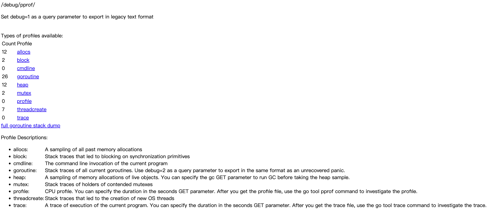

Go性能分析
日常开发中经常会对程序的性能进行分析，本文介绍几种常用的工具
Benchmark（基准测试）：衡量特定代码片段的执行效率，支持多维度参数调优。PProf（性能剖析）：深入分析CPU、内存、Goroutine等资源的使用情况，定位性能瓶颈。Trace（执行追踪）：分析Goroutine调度、系统调用、阻塞事件等并发问题。
1.Benchmark（基准测试）
- 编写基准函数：与单元测试类似，在
_test.go文件中定义以Benchmark开头的函数，例如：
package bench
import "testing"
func BenchmarkFib(b *testing.B) {
for i := 0; i < b.N; i++ {
Fib(10)
}
}
- 运行测试
- 执行所有基准测试：
go test -bench=. - 指定指定基准测试：
go test -bench=BenchmarkFib - 指定测试次数或时间
-benchtime=5s：指定测试时间-count=3：多次运行取平均结果-cpu=4：指定使用的CPU核心数-benchmem：获得内存分配的统计数据
go test -bench=. -benchmem
goos: darwin
goarch: arm64
pkg: github.com/xxf0512/playground/perf/bench
函数名称-CPU核心数 执行次数 耗时/次 分配内存/次 分配次数/次
BenchmarkFib-8 4481872 255.4 ns/op 0 B/op 0 allocs/op
PASS
ok github.com/xxf0512/playground/perf/bench 1.615s
- 结合性能分析：生成CPU和内存分析文件
go test -bench=. -cpuprofile=cpu.prof -memprofile=mem.prof
随后可用go tool pprof分析这些文件
2.PProf（性能剖析）
👇下面的实验基于go-pprof-practice项目，这是一个性能堪忧的炸弹程序。
2.1 环境搭建
pprof 可以通过命令行查看数据，也可以通过图形化页面graphviz直观展示
brew install graphviz # macos
apt install graphviz # ubuntu
yum install graphviz # centos
2.2 运行项目
go-pprof-practice项目入口如下, 启动并访问 pprof 页面http://localhost:6060/debug/pprof/
- 在这个页面点击触发采样并下载采样文件，命令行或可视化查看
- 命令行：
go tool pprof profile_path - 可视化：
go tool pprof -http=:8088 profile_path
- 命令行：
- 也可直接通过 go tool pprof 命令查看
go tool pprof -http=:8088 "http://localhost:6060/debug/pprof/xxx"
- 其他操作
- curl下载采样：
curl -o heap-target http://localhost:6060/debug/pprof/xxx
- curl下载采样：
package main
import (
"log"
"net/http"
_ "net/http/pprof" // 自动注册 handler 到 http server，方便通过 http 接口获取程序运行采样报告
"os"
"runtime"
"time"
"github.com/wolfogre/go-pprof-practice/animal"
)
func main() {
log.SetFlags(log.Lshortfile | log.LstdFlags)
log.SetOutput(os.Stdout)
runtime.GOMAXPROCS(1) // 限制 CPU 使用数，避免过载
runtime.SetMutexProfileFraction(1) // 开启对锁调用的跟踪
runtime.SetBlockProfileRate(1) // 开启对阻塞操作的跟踪
go func() {
// 启动一个 http server
if err := http.ListenAndServe(":6060", nil); err != nil {
log.Fatal(err)
}
os.Exit(0)
}()
for {
for _, v := range animal.AllAnimals {
v.Live()
}
time.Sleep(time.Second)
}
}
2.3 采样分析
pprof 支持以下几种类型的采样数据，注意图中的 Count，可以初步评估程序是否有问题
| 类型 | 描述 |
|---|---|
| allocs | 内存分配 情况的采样信息 |
| blocks | 阻塞操作 情况的采样信息 |
| cmdline | 显示程序 启动命令及参数 |
| goroutine | 当前所有 协程的堆栈信息 |
| heap | 堆上内存使用 情况的采样信息 |
| mutex | 锁争用 情况的采样信息 |
| profile | CPU 占用 情况的采样信息 |
| threadcreate | 系统线程创建 情况的采样信息 |
| trace | 程序运行跟踪信息 |
2.3.1 profile-CPU占用
在一段时间内进行打点采样，通过查看采样点在各个函数栈中的分布比例，以此来反映各函数对 cpu 的占用情况.
go tool pprof -http=:8088 "http://localhost:6060/debug/pprof/profile"
- 可以从 Peek/Top 列表看到每个函数消耗的资源
| 类型 | 描述 |
|---|---|
| flat | 当前函数本身的执行耗时 |
| flat% | flat 占 CPU 总时间的比例 |
| sum% | 当前函数及其父函数的总耗时占比 |
| cum | 当前函数及其子函数的总耗时 |
| cum% | cum 占 CPU 总时间的比例 |
- 也可以从函数调用链直观看到链路上各个方法的消耗

由图可见
- CPU 炸弹在 Tiger.Eat 函数里，for 循环把 CPU 打满
- 下游 asyncPreempt 函数消耗了 510ms，因为 g 超时触发抢占
2.3.2 heap-内存分配
go tool pprof -http=:8088 "http://localhost:6060/debug/pprof/heap"
- 函数调用链可以看到 Mouse.Steal 占用了大量内存
- Source 可以直接定位到有问题的代码，在不断往 buffer 里追加数据
2.3.3 goroutine-协程分析
go tool pprof -http=:8088 "http://localhost:6060/debug/pprof/goroutine"
- 这次用火焰图分析，可以看到 Wolf.Drink 函数创建大量协程
- Source 可以看到代码里发生了协程泄露
2.3.4 mutex-锁争抢
mutex 分析看的是某个 goroutine 持有锁的时长（mutex.Lock -> mutex.Unlock 之间这段时间），且只有在存在锁竞争关系时才会上报这部分数据
go tool pprof -http=:8088 "http://localhost:6060/debug/pprof/mutex"
- 先通过火焰图或调用图粗粒度分析问题，Wolf.Howl 方法锁占用时间异常
- 再到 Source 定位问题
func (w *Wolf) Howl() {
log.Println(w.Name(), "howl")
m := &sync.Mutex{}
m.Lock()
go func() {
time.Sleep(time.Second) // 锁占用时间
m.Unlock()
}()
m.Lock()
}
2.3.5 block-阻塞操作
查看某个 goroutine 陷入 waiting 状态（被动阻塞，通常因 gopark 操作触发，比如因加锁、读chan条件不满足而陷入阻塞）的触发次数和持续时长
go tool pprof -http=:8088 "http://localhost:6060/debug/pprof/block"
- 先通过火焰图或调用图粗粒度分析问题
- Source 定位问题
2.3.6 基准对比
可以对比两个不同时间点的采样，能更好地发现内存泄露等问题，提升效率
go tool pprof -http=:8080 -base heap-base heap-target
2.4 PProf 原理
3.Trace（执行追踪）
Reference
[2] Go性能分析工具
[3] golang pprof 实战
[6] Golang High-Performance Programming EP5: Benchmark
[7] Go语言基础之单元测试
[8] 深入浅出 Go trace